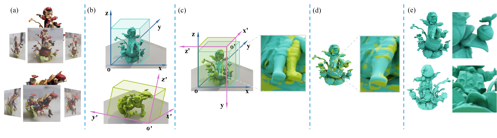
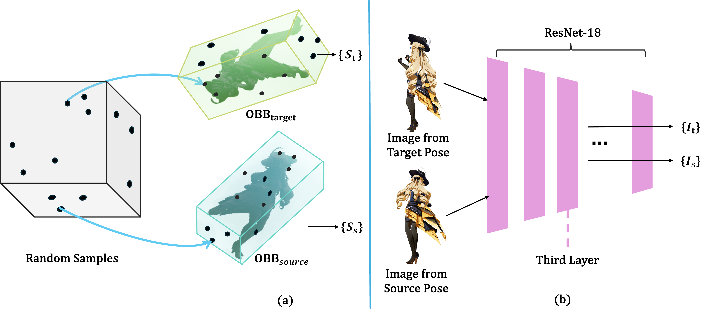
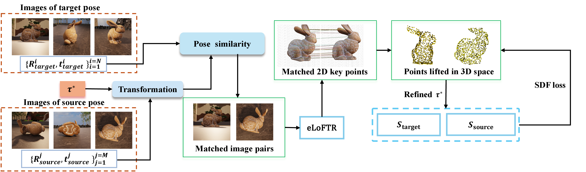

images/teaser.png
1Institution One 2Institution Two
*Corresponding author
Recent advances in multi-view 3D reconstruction, especially neural implicit surface methods, can recover high-quality geometry by representing shape with signed distance functions (SDFs). However, reconstructing complex objects with severe self-occlusion remains difficult when all images are captured under a single object pose, because the observed views often provide incomplete spatial coverage. We propose PoseFusion, a multi-pose reconstruction framework that fuses neural implicit surfaces independently learned from different object poses into a unified 3D representation. PoseFusion follows a two-stage registration-and-fusion pipeline. First, we extract an oriented bounding box (OBB) from the mesh derived from each pose-specific SDF and use the OBBs, SDF samples, and multi-view image features to estimate a coarse inter-pose alignment. Second, we refine the alignment using image- and SDF-guided correspondences: cross-pose image matches are lifted to 3D using the learned SDFs and used to iteratively optimize the relative transformations. To facilitate evaluation, we construct a dataset of synthetic and real-world objects with complex geometry and strong self-occlusion, captured across multiple poses with calibrated multi-view images. Experiments show that PoseFusion is robust under challenging capture conditions and consistently produces high-fidelity reconstructions from multi-pose, multi-view inputs.
The video gives a quick overview of the multi-pose capture setting and shows how PoseFusion aligns pose-wise reconstructions into one fused neural implicit surface.
PoseFusion is a two-stage registration-and-fusion pipeline:

Without loss of generality, we set the first pose as the target Pt and align each remaining pose Ps pairwise to it. After extracting per-pose meshes from the learned SDFs, we apply PCA to obtain oriented bounding boxes Os, Ot. The 24 candidate vertex correspondences between the OBBs define 24 rigid candidates τ1…24. We score each candidate with a combined geometric–visual loss:
where φ(·) is the third residual block (conv3) of a ResNet-18 feature extractor. We empirically set λsdf = λimg = 0.5 and sample No = 100,000 points on the OBB surfaces.

The coarse transform τ* initializes the fine stage. We pick cross-pose image pairs whose camera extrinsics are close after applying τ*:
eLoFTR matches the selected pairs in 2D; matched pixels are lifted to 3D by tracing camera rays and snapping to the zero-level sets of the learned SDFs. We then optimize the rigid transform T = (R, t) by minimizing
where Lsdf is a bidirectional SDF-consistency term that pushes transformed source points to the target zero-level set (and vice versa), Lrotation = ‖RTR − I‖ keeps R orthogonal, and κ is a robust kernel.

After fine registration, all camera extrinsics are expressed in a common coordinate frame. A single unified implicit surface is then jointly retrained on the merged multi-view set. This step is optional but consistently improves geometric completeness and rendering quality for objects with severe self-occlusion or fine details.
We construct a benchmark of 18 objects — 11 synthetic and 7 real-world — each captured under three poses with 30–40 multi-view images per pose. Synthetic data is rendered with BlenderNeRF + Blender. Real captures use an iPhone, with intrinsics and extrinsics calibrated against a 1m × 1m ArUco marker board so that all poses share a common metric scale.

We compare against DReg-NeRF, Reg-NF, and GaussReg on objects with large pose variation, complex topology, partial symmetry, and severe self-occlusion. PoseFusion successfully aligns all three poses and produces coherent, complete reconstructions where baselines fail or diverge by tens of degrees.


Lower is better for both rotation error R (degrees) and translation error T (×10²). Each cell reports source1 / source2; ``—'' indicates a failed run.
| Metric | Method | Bunny | Book | Nikon | Heel Slipper | Figurine A | Tank | Monster | Figurine B | Rubik's Cube | Lego |
|---|---|---|---|---|---|---|---|---|---|---|---|
| R (°) ↓ | Reg-NF | 3.62/1.84 | 0.29/0.27 | —/— | —/— | —/— | —/— | —/— | —/— | —/— | —/— |
| DReg-NeRF | —/— | —/— | —/— | —/— | —/— | —/— | —/— | —/— | —/— | —/— | |
| GaussReg | 13.98/— | 10.21/22.27 | —/— | 3.27/— | —/— | —/— | —/— | 25.29/— | —/— | —/— | |
| Ours | 0.09/0.02 | 0.11/0.18 | 0.09/0.11 | 0.12/0.07 | 0.01/0.03 | 0.14/0.09 | 0.03/0.03 | 0.04/0.06 | 0.08/0.11 | 0.05/0.20 | |
| T (×10²) ↓ | Reg-NF | 1.47/0.75 | 0.13/3.84 | 29.56/23.0 | 26.25/18.68 | 21.29/— | —/— | —/— | —/— | —/— | —/— |
| DReg-NeRF | 11.48/15.11 | 14.7/12.3 | 27.72/1.33 | 2.36/15.55 | 13.05/12.41 | —/— | —/— | —/— | —/— | —/— | |
| GaussReg | 2.40/26.58 | 1.13/15.15 | 7.83/— | 2.73/— | 30.09/— | —/— | —/28.40 | 11.69/— | —/— | —/— | |
| Ours | 0.10/0.02 | 0.06/0.03 | 0.07/0.14 | 0.03/0.02 | 0.01/0.02 | 0.13/0.10 | 0.03/0.02 | 0.03/0.06 | 0.14/0.10 | 0.07/0.18 |
@article{posefusion,
title = {PoseFusion: Joint Registration and Fusion of Pose-wise Neural Implicit Surfaces for Multi-pose 3D Reconstruction},
author = {Anonymous},
journal = {},
year = {}
}